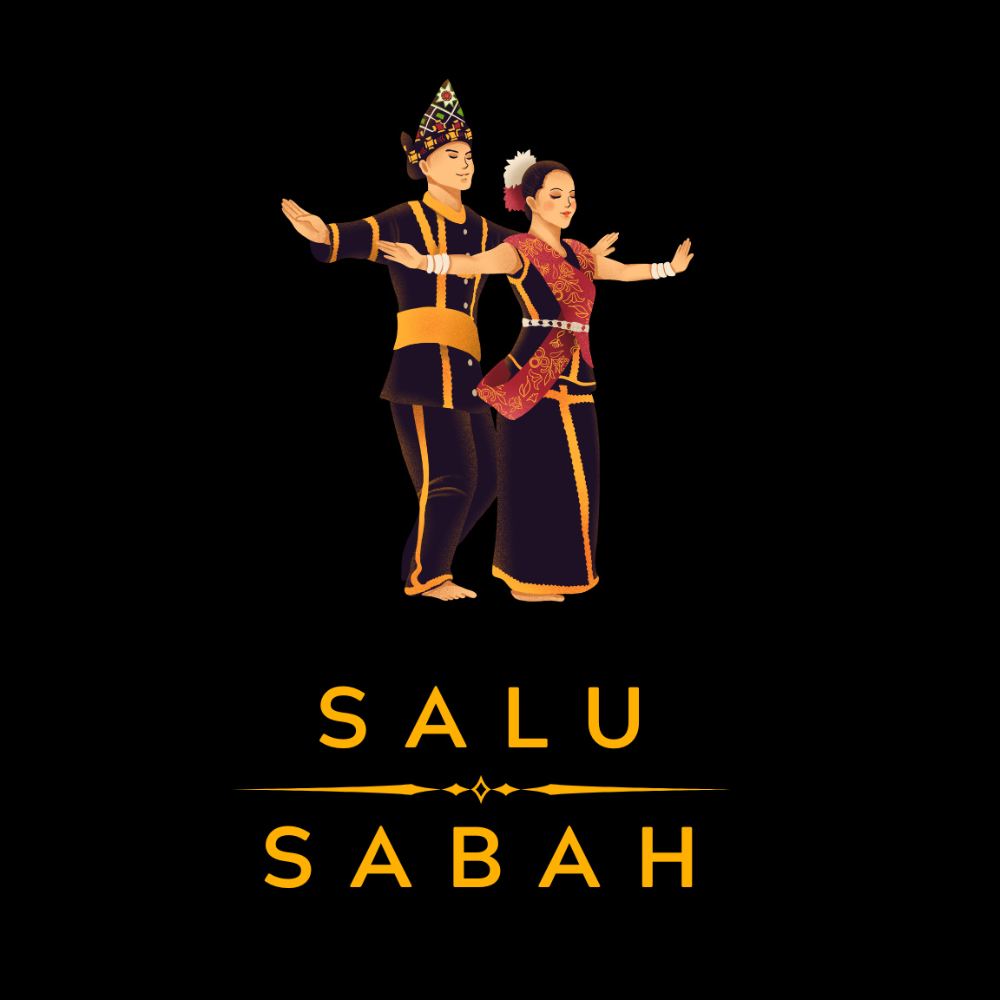

A collection of projects that showcase my skills in software development and multimedia design.

An Augmented Reality (AR) application developed to preserve and promote Sabah's traditional attire through an interactive digital learning experience.
The application features 20 traditional attire 3D models, interactive information panels, cultural learning content, and AR visualisation to increase awareness of Sabah's cultural heritage among younger generations.
Tools Used: Unity, Autodesk Maya, C#
View Details →A collection of 2D and 3D animation projects showcasing character animation, motion graphics, modelling and visual storytelling skills developed through multimedia production projects.
View Details →